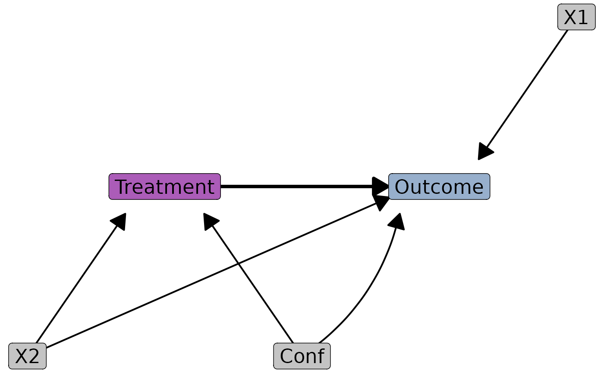

Function for drawing DAGs. Compatible with dagitty.net via the "dagitty" argument.
Usage
dagR(
treatment,
outcome,
path.list,
label.fill = cancR_palette[8],
label.color = "Black",
label.positions = NULL,
segment.shift = list(),
treatment.fill = cancR_palette[1],
outcome.fill = cancR_palette[4],
arrow.color = "Black",
arrow.color.main = "Black",
arrow.linewidth = 0.7,
arrow.size = 5,
arrow.distance = 0.1,
distance.method = "rectangle",
distance.resolution = 6,
distance.ratio = 1,
distance.string = 0.12,
curvature = NULL,
label.size = 6,
dagitty = NULL,
position.digits = 0,
seed = 1,
margin = c(-0.1, 0.1, -0.1, 0.1),
draw = F
)Arguments
- treatment
name of treatment variable
- outcome
name of outcome variable
- path.list
named list of paths to draw in the format list("treatment" = "outcome", "confounder" = c("treatment", "outcome"))
- label.fill
fill color for labels
- label.color
border.color for labels
- label.positions
manual adjustment of label positions (x,y) in the format list("treatment" = c(0,0))
- segment.shift
list of vectors of c(from, to, x, y) where x and y are shifts in coordinate, e.g. list("conf", "outcome", 1,0)
- treatment.fill
fill color for the treatment label
- outcome.fill
fill color for the outcome label
- arrow.color
color of the arrows
- arrow.color.main
color of the arrow between treatment and outcome
- arrow.linewidth
linewidth of the arrows
- arrow.size
size of the arrow head in mm
- arrow.distance
distance from label center to arrowhead (unit same as coordinates)
- distance.method
how the points should be spread around lables ("rectangle" (default), "midways", "corners", "circle" and "oval")
- distance.resolution
the number of subdivisions on the x and y axis of the given shape. For circles it indicates the subdivisions of 360 degrees.
- distance.ratio
the ratio between the x.distance and y.distance. Larger values increase the distance width.
- distance.string
arbitrary value specifying the amount of spacing caused by the number of characters in the label
- curvature
named list of segments that should be curved in the format list(c("treatment", "outcome", 0.2))
- label.size
text size of the labels
- dagitty
output from dagitty.net inserted in single quotation marks.
- position.digits
rounding of the position cooridinates for dagitty plots for aligment. Default = 0.
- seed
for reproducibility
- margin
vector of length 4 adding space to the limits of the x and y axis in the format c(xmin, xmax, ymin,ymax)
- draw
whether the distance.points should be drawn around label for diagnostical purposes (default = F)
Examples
dagR(treatment = "treatment",
outcome = "outcome",
list("treatment" = "outcome",
"conf" = c("treatment", "outcome"),
"x1" = "outcome",
"x2" = c("treatment", "outcome")),
arrow.distance = 0.1,
arrow.linewidth = 0.7,
arrow.size = 5,
distance.ratio = 40,
distance.method = "rectangle",
distance.resolution = 10,
label.positions = list("treatment" = c(5,5)),
segment.shift = list(c("conf", "outcome", .2,-0.05)),
seed = 3,
curvature = list(c("conf", "outcome", 0.2)))
